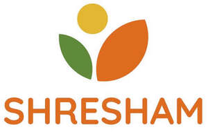

Trade Mark Journal No.2026/012 20 March 2026
UK00004349201 4 March 2026 (3,5,30,42)

- Class 3
- Herbal extracts for cosmetic purposes; Bath herbs; Creams (Cosmetic -); Cosmetic creams; Cosmetics and cosmetic preparations; Cosmetic moisturisers; Cosmetic facial lotions; Cosmetic soap; Lotions for cosmetic purposes; Facial creams [for cosmetic use]; Cosmetic powder; Cosmetic preparations; Cosmetic kits; Cosmetic creams for the skin; Skin creams [for cosmetic use]; Skin balms [cosmetic]; Serums for cosmetic purposes; Cosmetic hair lotions; Facial toners [cosmetic]; Skin cream [for cosmetic use]; Cosmetic creams and lotions; Facial masks [cosmetic]; Cosmetic hand creams; Ointments for cosmetic use; Moisturising gels [cosmetic]; Cosmetics.
- Class 5
- Herbal medicine; Herbal supplements; Herbal tea for medicinal use; Herbal teas for medicinal purposes; Liquid herbal supplements; Herbal beverages for medicinal use; Decoctions of medicinal herb; Medicinal herbs; Medicinal herb extracts; Extracts of medicinal herbs; Medicinal herbal extracts for medical purposes; Medicinal herb infusions; Herbal anti-itch ointments for pets; Herbal creams for medical use; Chinese traditional medicinal herbs; Medicinal tea; Anti-oxidants obtained from herbal sources; Herbal compounds for medical use; Herbal male enhancement capsules; Herbal detoxification agents; Herbal extracts for medical purposes; Herb teas for medicinal purposes; Herbal sprays for medical use; Herbal preparations for medical use; Medicinal ointments; Herbal honey throat lozenges; Homeopathic anti-inflammatory ointments; Plant and herb extracts for medicinal use; Homeopathic medicines; Medicinal infusions; Homeopathic supplements; Herbal sore skin ointments for pets; Medicinal oils; Herbs for medicinal purposes; Homeopathic pharmaceuticals; Extracts of medicinal plants; Medicinal beverages; Medicinal drinks; Medicinal herbs in dried or preserved form; Pharmaceuticals and natural remedies; Medicinal clays; Anti-oxidants for medicinal use; Medicinal roots; Roots (Medicinal -); Medicinal healthcare preparations.
- Class 30
- Herbal tea [other than for medicinal use]; Herbal teas; Herbal tea; Non-medicinal herbal tea; Herbal infusions [other than for medicinal use]; Herbal infusions; Non-medicinal herbal infusions; Herbal teas, other than for medicinal use; Herbal honey; Herbal teas [infusions]; Aromatic teas [other than for medicinal use]; Herb teas, other than for medicinal use; Herbal honey lozenges [confectionery]; Herb teas, other than for medicinal purposes; Sweets (Non-medicated -) containing herbal flavourings; Herb tea [infusions]; Fruit flavoured tea [other than medicinal]; Processed ginseng used as a herb, spice or flavoring; Packaged tea [other than for medicinal use]; Teas (Non-medicated -) flavoured with lemon; Herbal preparations for making beverages; Non-medicinal infusions; Chamomile tea; Sage tea; Dried herbs.
- Class 42
- Cosmetic research; Product development; Product design and development; Product research and development; Product development consultation; Product development for others; Design and testing for new product development; Development (Research and -) of products; Design and development of consumer products; Development of consumer products; Design and development of new products; Development of new products; Pharmaceutical products development; Technical consultancy relating to product development; Research and development of new products; Product design services; Pharmaceutical product evaluation; Product testing; Consumer product design; Product quality evaluation; Product quality testing; Research and development of new products for others; Research and development services; Product quality testing services; Pharmaceutical research and development; Product safety testing services; Consumer product safety testing.
SHRESHAM LTD